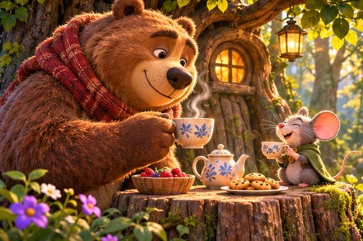
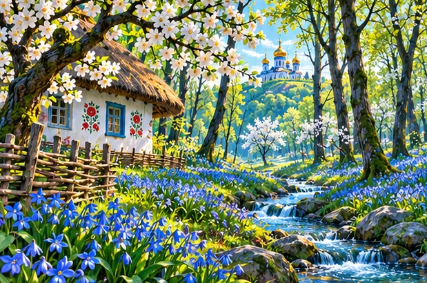
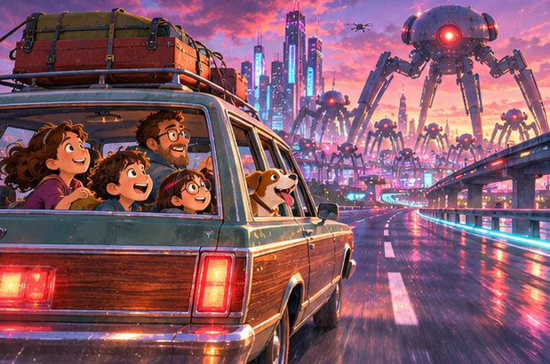

2012·Франція·79 хв·5+
Ernest et Célestine
Ведмідь і мишка дружать, хоча «так не можна». Намальовано акварельно, сказано твердо: дружба важливіша за правила про те, хто з ким може.
Де шукатиПрокат: Megogo, Apple TVчасто лише з субтитрами
Питання після переглядуЧому всі були проти їхньої дружби?

2016·США·107 хв·5+
Moana
Дівчинка вирушає в океан, бо відчуває, що мусить. Про внутрішній голос, який не збігається з планами дорослих.
Де шукатиsweet.tv або Megogoліцензія Disney · український дубляж
Питання після переглядуЯк Моана зрозуміла, хто вона?

2003·США·100 хв·5+
Finding Nemo
Тато переплив океан за сином, а по дорозі навчився довіряти. Немо з хворим плавцем — про те, що «не такий» не означає «не зможе».
Де шукатиsweet.tv або Megogoліцензія Disney · український дубляж
Питання після переглядуЧого тато Немо навчився від Дорі?
2021·США·102 хв·6+
Encanto
У родині з магічними дарами одна дівчинка без дару. Про тиск очікувань і про те, як важко бути «сильною» всім на радість.
Де шукатиsweet.tv або Megogoліцензія Disney · український дубляж
Питання після переглядуЧи буває, що від тебе чекають надто багато?

2016·США·108 хв·6+
Zootopia
Крільчиха-полісменка і лис-шахрай розплутують справу, а заодно свої упередження. Доступна розмова про стереотипи.
Де шукатиsweet.tv або Megogoліцензія Disney · український дубляж
Питання після переглядуЧи бувало, що про тебе подумали неправду, бо «такі, як ти, завжди так»?
2008·США·92 хв·6+
Kung Fu Panda
Товстого панду беруть у воїни, і виявляється, секретного складника немає. Про наставника, який повірив першим.
Де шукатиsweet.tv або MegogoDreamWorks · український дубляж
Питання після переглядуЩо означає «секретного складника немає»?
2021·США·95 хв·6+
Luca
Двоє морських хлопців літують у містечку, приховуючи, хто вони. Літо, велосипед і дружба, яка дає смілість.
Де шукатиsweet.tv або Megogoліцензія Disney · український дубляж
Питання після переглядуЩо Лука зміг зробити тільки завдяки Альберто?

2002·США·85 хв·6+
Lilo & Stitch
Дві сестри після смерті батьків і прибулець, який ламає все. «Охана означає сімʼя» — тут це не слоган, а вибір щодня.
Де шукатиsweet.tv або Megogoліцензія Disney · український дубляж
Питання після переглядуЩо робить людей сімʼєю?

2023·Україна·99 хв·6+
Українська версія історії про лісову душу і людину. Про вибір між обовʼязком і любовʼю та про турботу про живий ліс.
Де шукатиMegogo, sweet.tvукраїнське виробництво
Питання після переглядуЩо Мавка захищала і чим вона ризикувала?

2012·США·101 хв·6+
Wreck-It Ralph
Поганець із гри хоче бути хорошим, а дівчинка-«глюк» — гонщицею. Дружба двох, яких нікуди не брали.
Де шукатиsweet.tv або Megogoліцензія Disney · український дубляж
Питання після переглядуЧому Ральфа вважали поганим, хоча він таким не був?

2007·США·111 хв·6+
Ratatouille
Щур, який готує, і кухар, який не вміє. Удвох вони — одна людина, і це найточніша картинка партнерства.
Де шукатиsweet.tv або Megogoліцензія Disney · український дубляж
Питання після переглядуУ чому ви з другом добре доповнюєте одне одного?

2010·США·98 хв·6+
How to Train Your Dragon
Хлопець, якому не вдається бути «як усі», знаходить спільну мову з тим, кого всі бояться. Про сміливість не бити.
Де шукатиsweet.tv або MegogoDreamWorks · український дубляж
Питання після переглядуЧому Гикавка не захотів убити дракона?

1989·Японія·103 хв·7+
魔女の宅急便
Тринадцятирічна відьма живе сама й раптом втрачає силу. Найкращий мультик про вигорання і про те, що відновлюватися допомагають люди.
Де шукатиNetflixбібліотека Ghibli · українського дубляжу може не бути
Питання після переглядуЩо повернуло Кікі здатність літати?
2001·США·90 хв·7+
Shrek
Огр, віслюк і принцеса з секретом. Голосно, смішно і про те, що приймати себе доводиться вголос.
Де шукатиsweet.tv або MegogoDreamWorks · український дубляж
Питання після переглядуЧому Шрек спершу нікого не підпускав?

2020·США·100 хв·8+
Soul
Музикант помирає за крок до мрії і вчить загублену душу жити. Про те, що «призначення» — не те саме, що життя.
Де шукатиsweet.tv або Megogoліцензія Disney · український дубляж
Питання після переглядуЯкий звичайний день цього тижня був для тебе хорошим?

2021·США·113 хв·8+
The Mitchells vs. the Machines
Тато й донька, які не розуміють одне одного, рятують світ у відпустці. Смішно й точно про батьків, що бояться втратити дитину дорослою.
Де шукатиNetflixпрацює в Україні, український інтерфейс
Питання після переглядуЧого тато не помічав у Кейті?

2020·Ірландія·103 хв·9+
Wolfwalkers
Донька англійського ловця вовків дружить із дівчинкою, що обертається вовчицею. Про страх, який насаджують дорослі, і про вірність другові проти всіх.
Де шукатиApple TVвходить у платний iCloud+, від $0.99 на місяць
Питання після переглядуЩо Робін довелося зробити, щоб не зрадити друга?